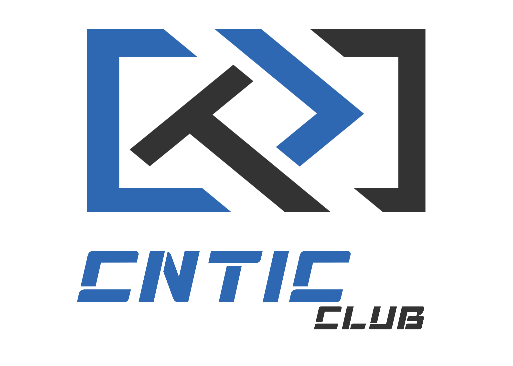

CNTIC Club
Discover • Learn • Join
أوصل للهدف واكتشف CNTIC
حرّك اللاعب 🔵 داخل المتاهة حتى توصل للهدف 🟢. تجنّب الجدران الرمادية. تقدر تستعمل الأسهم في لوحة المفاتيح أو الأزرار تحت المتاهة.
بالتوفيق! راقب المسارات الفارغة وحاول تلقى الطريق.
🔵 اللاعب · 🟢 الهدف · ⬛ جدار
تقدر تتحرك بالأسهم أو أزرار الشاشة.
مرحباً بك في CNTIC Club 👋
نادي يجمع الطلبة حول التكنولوجيا والعمل الجماعي وصناعة المبادرات. تعرّف على النادي وأقسامه، واكتشف أين يمكن لمهاراتك واهتماماتك أن تصنع فرقًا.
💡 التعلّم بالممارسة🤝 العمل الجماعي🚀 الإبداع والابتكار🌐 تعريف بنادي CNTIC Club
ما هو نادي CNTIC؟
هو نادٍ علمي طلابي تابع لجامعة قاصدي مرباح ورقلة، مرتبط بكلية التكنولوجيات الحديثة للمعلومات والاتصال، ويهتم بالإعلام الآلي والتقنيات الحديثة وتطوير مهارات الطلبة من خلال التكوين والتطبيق والمشاريع العلمية.
منذ متى؟
تأسس النادي في 22 أكتوبر 2015 على يد طلبة إعلام آلي، ويُعتبر من أقدم وأفضل النوادي في ولاية ورقلة.
رؤيتنا
أن نكون مجتمعاً طلابياً تقنياً رائداً يساهم في بناء جيل من الطلبة المبدعين، القادرين على مواكبة التطور التكنولوجي وصناعة حلول مبتكرة.
ما هو الهدف؟
توفير مساحة للطلبة المهتمين بالإعلام الآلي والتقنيات الحديثة لتبادل المعرفة، وتطوير مهاراتهم، وتحويل أفكارهم إلى تجارب ومشاريع تطبيقية.
رسالتنا إليكم
تمكين الطلبة من تطوير مهاراتهم التقنية والعلمية من خلال التكوين التطبيقي، وتبادل المعرفة، والعمل الجماعي، وتشجيع الابتكار والمبادرة داخل الجامعة وخارجها.
بماذا يهتم النادي؟
- البرمجة وتطوير البرمجيات والتطبيقات.
- الأمن السيبراني والوعي الرقمي.
- الذكاء الاصطناعي.
- التصميم والإبداع الرقمي.
- المشاريع والابتكارات الرقمية.
- المسابقات الجامعية والوطنية والعالمية، مثل Huawei Competition والهاكاثونات.
- الألعاب العقلية والفكرية.
ما الذي يميزنا؟
التطبيق قبل الاكتفاء بالنظرية، مجتمع طلابي متعاون، التطور المستمر، ومن الفكرة إلى الإنجاز.
🚀 موسم 2026–2027
A New Chapter — A New Standard
هوية جديدة، فريق جديد، مشاريع جديدة، وتجارب جديدة.
أقسام CNTIC
تعرّف على الفرق واكتشف أين يمكنك المساهمة
Section IT
يهتم بالجانب التقني للنادي، مثل البرمجة، تطوير المواقع والتطبيقات، الشبكات، الأمن السيبراني، والذكاء الاصطناعي، حسب مشاريع النادي.
المهام: تطوير الحلول التقنية، تنفيذ المشاريع، تقديم ورشات تقنية والمساعدة في حل المشكلات التقنية.
يناسبك إذا: كنت تحب البرمجة، التكنولوجيا، حل المشكلات والتعلم التقني المستمر.
HR — Human Resources
يهتم بالأعضاء داخل النادي، ويساهم في تنظيم الفريق، ومتابعة احتياجاته، وتحسين التواصل والتعاون بين أفراده.
المهام: استقبال الأعضاء الجدد، متابعة الحضور والمشاركة، توزيع المهام بالتنسيق مع المسؤولين، حل الخلافات ومتابعة تطور الأعضاء.
يناسبك إذا: كنت تحب التواصل مع الناس، التنظيم، القيادة والعمل الجماعي.
Design
يحوّل الأفكار إلى تصاميم بصرية جذابة واحترافية تعكس هوية النادي وتوصل رسالته للجمهور.
المهام: تصميم المنشورات والملصقات، إعلانات الفعاليات، الشهادات، العروض التقديمية والعناصر البصرية للهوية الرسمية.
يناسبك إذا: كنت تحب الإبداع، الألوان، الخطوط والتصميم، وتريد تطوير مهاراتك في أدوات مثل Photoshop وIllustrator وCanva وFigma.
Editors
يتولى تحرير الفيديوهات والصوتيات وتحويل اللقطات الخام إلى محتوى متناسق وجذاب وجاهز للنشر.
المهام: مونتاج فيديوهات الفعاليات، إعداد Reels وملخصات الأنشطة، إضافة المؤثرات الصوتية والانتقالات وتصحيح الألوان.
يناسبك إذا: كنت تحب المونتاج، الإيقاع، المؤثرات البصرية والصوتية وسرد القصص بالفيديو، باستخدام أدوات مثل DaVinci Resolve أو Premiere Pro.
Event
يتولى التخطيط للفعاليات والأنشطة التي ينظمها النادي، من الفكرة الأولى إلى التنفيذ والتقييم.
المهام: إعداد برنامج الفعاليات، تنسيق المكان والتوقيت، تنظيم التسجيل والاستقبال، توزيع المهام والتنسيق مع بقية الأقسام أثناء الحدث.
يناسبك إذا: كنت تحب التخطيط، التنظيم، التواصل المباشر مع الناس والعمل تحت الضغط.
Social Media / Creator
يهتم بالحضور الرقمي والتدريبي للنادي، ويصنع محتوى يعرّف بأنشطته ويزيد التفاعل مع الجمهور كما يهتم بإنجاز الملتقيات ونجاحها.
المهام: إعداد أفكار المنشورات والقصص، كتابة النصوص والتعليقات، إدارة حسابات التواصل الاجتماعي، إعداد خطة النشر، تصوير محتوى بسيط ومتابعة التفاعل والإحصائيات.
يناسبك إذا: كنت تحب التواصل الاجتماعي، الكتابة، التصوير، صناعة المحتوى وفهم ما يجذب الجمهور.
Production
يتولى تحويل أفكار المحتوى إلى لقطات ومشاهد حقيقية، من خلال التحضير والتصوير والتسجيل الميداني.
المهام: تجهيز الكاميرات والإضاءة والميكروفونات، تصوير الفعاليات والمقابلات، تسجيل الصوت، تنفيذ الأفكار البصرية والتنسيق مع فريق المونتاج.
يناسبك إذا: كنت تحب التصوير، الكاميرات، الإضاءة، الصوت والعمل خلف الكواليس.
تحب تكون جزءًا من الرحلة؟ 🚀
اختَر القسم الذي يناسب اهتماماتك، ثم انتقل إلى استمارة التسجيل.
خطوتك الأولى تبدأ هنا ✨
اضغط على الزر لفتح استمارة التسجيل الرسمية للنادي.